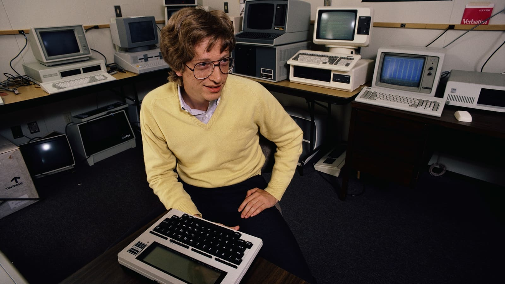
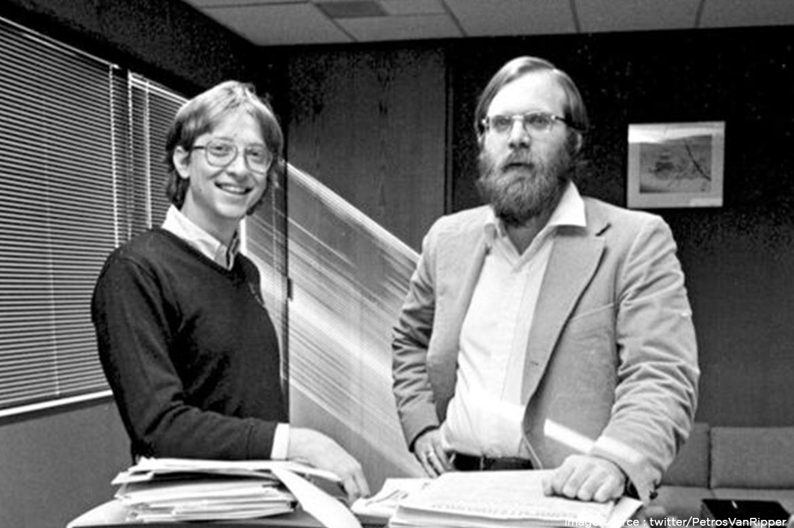
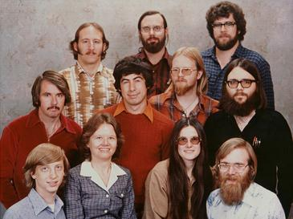
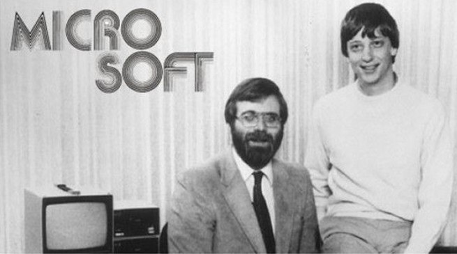
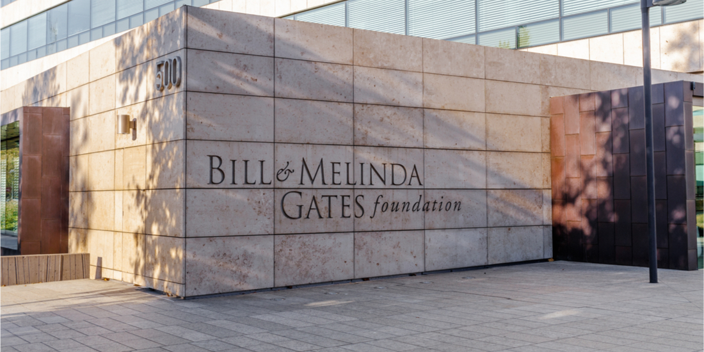

About Bill
Bill Gates, in full William Henry Gates III, (born October 28, 1955,Seattle, Washington, U.S.), American computer programmer and entrepreneur who cofounded Microsoft Corporation, the world's largest personal-computer software company.

He grew up in Seattle, Washington, with an amazing and supportive family who encouraged his interest in computers at an early age.
At 13, he enrolled in the private Lakeside prep school, where he wrote his first software program. When he was in the eighth grade, Gates took an interest in programming the GE system in BASIC, and he was excused from math classes to pursue his interest. He wrote his first computer program on this machine, an implementation of tic-tac-toe that allowed users to play games against the computer. Gates was fascinated by the machine and how it would always execute software code perfectly.
He dropped out of college to start Microsoft with his childhood friend Paul Allen.
Microsoft
Microsoft is a multinational computer technology corporation. Microsoft was founded on April 4, 1975, by Bill Gates and Paul Allen in Albuquerque, New Mexico. Its current best-selling products are the Microsoft Windows operating system; Microsoft Office, a suite of productivity software; Xbox, a line of entertainment of games, music, and video; Bing, a line of search engines; and Microsoft Azure, a cloud services platform.
When Bill and Paul Allen started Microsoft, their vision of “a computer on every desktop and in every home” seemed farfetched to most people. Today, thanks to Microsoft and many other companies, that vision is a reality in many parts of the world, and personal technology is an integral part of society.
Bill is passionate about Microsoft's work and will always be involved with the company, including his present role as a member of the board and technology advisor.



Bill & Melinda Gates Foundation
These days Bill focuses most of his time on the work he is doing through his foundation.

The Bill & Melinda Gates Foundation (BMGF) is an American private foundation founded by Bill Gates and Melinda French Gates. Based in Seattle, Washington, it was launched in 2000 and is reported as of 2020 to be the second largest charitable foundation in the world, holding $49.8 billion in assets. On his 43rd birthday, Bill Gates gave the foundation $1 billion. The primary stated goals of the foundation are to enhance healthcare and reduce extreme poverty across the world, and to expand educational opportunities and access to information technology in the U.S. Key individuals of the foundation include Bill Gates, Melinda French Gates, Warren Buffett, chief executive officer Mark Suzman, and Michael Larson.
People are often surprised to hear him say that this work has a lot in common with his work at Microsoft. In both cases, he gets to bring together smart people and collaborate with them to solve big, tough problems.
Bill is gratified to know that the foundation and its many partners are helping people all over the world live healthier, more productive lives.
In addition to the foundation's work, Bill has separately taken on some projects to address issues that interest him personally, such as delivering clean energy to everyone who needs it. In all his work—with the foundation and otherwise—he's focused on what he calls catalytic philanthropy: investments in innovations that will improve life for the poorest. They're solutions to problems where markets and governments underinvest.